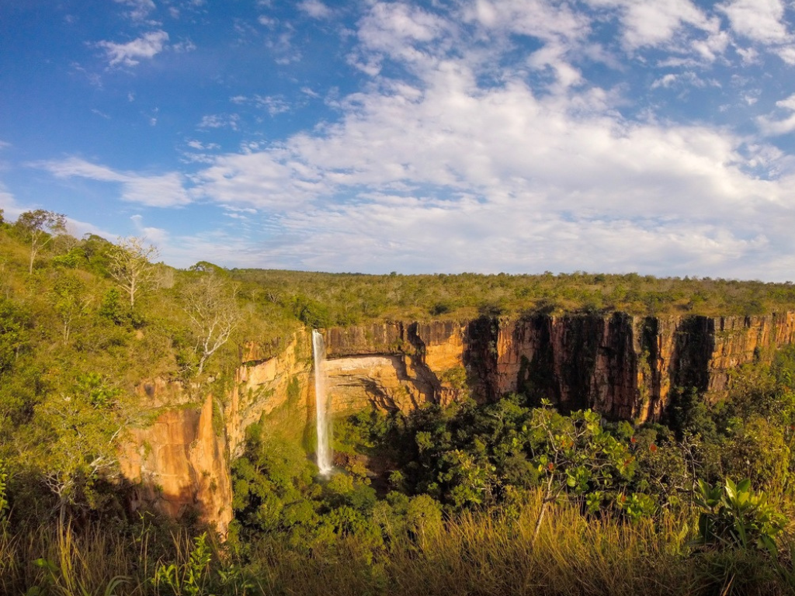

O Mato Grosso é um dos maiores estados brasileiros em extensão territorial e possui grande importância para o agronegócio nacional, principalmente na produção de soja, milho e algodão. A capital, Cuiabá, é conhecida pelo clima quente e pela rica cultura regional. O estado abriga partes da Amazônia, do Cerrado e do Pantanal, reunindo enorme diversidade ambiental.

Voltar